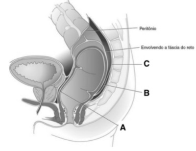
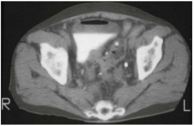

Questão 1 · Marcadores de necrose miocárdica no IAMCSST · Def inição de inf arto agudo do miocárdio · 4000192722Podem acontecer resultados falso-positivos, em que a CK-MB é positiva e a troponina é negativa em cerca de 4% dos pacientes. Sendo correto que:
A Nos casos em que a CK-MB está elevada e a troponina está normal, ambas dentro de sua janela cinética, deve- se basear a decisão clínica no resultado da CK-MB.
B Nos casos em que a CK-MB está elevada e a troponina está normal, ambas dentro de sua janela cinética, deve- se basear a decisão clínica no resultado da troponina.
C Nos casos em que a CK-MB está elevada e a troponina está anormal, ambas dentro de sua janela cinética, deve- se basear a decisão clínica nunca no resultado da troponina.
D Nos casos em que a CK-MB está elevada e a troponina está normal, ambas dentro de sua janela cinética, nunca se deve basear a decisão clínica no resultado da troponina.
Questão 2 · Hipercolesterolemia f amiliar · Medidas para o controle da hipercolesterolemia · 4000192718Devido à alta prevalência de Hipercolesterolemia Familiar (HF) na população geral e o seu grande impacto nas taxas de doença cardiovascular e mortalidade, está correto afirmar que:
A Toda anamnese deve incluir a pesquisa de histórico familiar de hipercolesterolemia, de uso de medicamentos hipolipemiantes e de doença aterosclerótica prematura, incluindo a idade de acometimento.
B Toda anamnese deve incluir a pesquisa de histórico familiar de hipercolesterolemia, de uso de medicamentos hipolipemiantes e de doença aterosclerótica prematura, excluindo a idade de acometimento.
C Toda anamnese deve incluir a pesquisa de histórico familiar de hipercolesterolemia, nunca de uso de medicamentos hipolipemiantes e de doença aterosclerótica prematura, incluindo a idade de acometimento.
D Toda anamnese deve incluir a pesquisa de histórico familiar de hipercolesterolemia, de uso de medicamentos hipolipemiantes e não de doença aterosclerótica prematura, incluindo a idade de acometimento.
Questão 3 · Xantomas · Hipercolesterolemia f amiliar · 4000192716Os xantomas tuberosos amarelo-alaranjados e os xantelasmas de pálpebras não são específicos de Hipercolesterolemia Familiar (HF), sendo correto que:
A Não devem ser valorizados quando encontrados em pacientes com idade em torno de 20 a 25 anos.
B Devem ser valorizados quando encontrados em pacientes com idade em torno de 5 a 10 anos.
C Devem ser desconsiderados quando encontrados em pacientes com idade em torno de 20 a 25 anos.
D Devem ser valorizados quando encontrados em pacientes com idade em torno de 20 a 25 anos.
Questão 4 · Esquema básico para tuberculose pulmonar · Esquema básico RIPE RHZE · 4000192715A atuação dos medicamentos anti-TB difere conforme o metabolismo bacilar. Sendo correto o item:
A Na população intramacrofágica, agem os fármacos que melhor se difundem no meio intracelular e em pH alcalino: rifampicina, pirazinamida e etambutol.
B Na população intramacrofágica, agem os fármacos que melhor se difundem no meio intracelular e em pH ácido: rifampicina, pirazinamida e etambutol.
C Na população intramacrofágica, agem os fármacos que pior se difundem no meio intracelular e em pH ácido: rifampicina, pirazinamida e etambutol.
D Na população intramacrofágica, não agem os fármacos que melhor se difundem no meio intracelular e em pH ácido: rifampicina, pirazinamida e etambutol.
Questão 5 · Diagnóstico dif erencial de dor torácica na emergência · 4000192714Pacientes com dor torácica no setor de emergência, identi cados como de risco baixo ou intermediário, tem como adequado o item:
A Nunca podem ser submetidos ao teste ergométrico (TE), apesar do resultado normal confere risco anual baixo de eventos cardiovasculares, permitindo a alta hospitalar mais precoce e segura.
B Podem ser submetidos ao teste ergométrico (TE), cujo resultado anormal confere risco anual baixo de eventos cardiovasculares, permitindo a alta hospitalar mais precoce e segura.
C Podem ser submetidos ao teste ergométrico (TE), cujo resultado normal confere risco anual baixo de eventos cardiovasculares, permitindo a alta hospitalar mais precoce e segura.
D Podem ser submetidos ao teste ergométrico (TE), cujo resultado normal confere risco anual elevado de eventos cardiovasculares, permitindo a alta hospitalar mais precoce e segura.
Questão 6 · Análise do perf il lipídico e das apolipoproteínas · 4000192713A determinação do perfil lipídico está sujeita a uma série de variações relacionadas:
A Tanto ao método e aos procedimentos utilizados, mas não aos fatores peculiares do indivíduo, como estilo de vida, uso de medicações e doenças associada.
B Tanto ao método e aos procedimentos utilizados como aos fatores peculiares do indivíduo, como estilo de vida, uso de medicações e nunca de doenças associada.
C Tanto ao método e aos procedimentos utilizados como aos fatores peculiares do indivíduo, excluindo o estilo de vida.
D Tanto ao método e aos procedimentos utilizados como aos fatores peculiares do indivíduo, como estilo de vida, uso de medicações e doenças associada.
Questão 7 · Esquema básico para tuberculose pulmonar · Rif ampicina · 4000192712Nas lesões caseosas fechadas da tuberculose, podemos indicar como correto o item:
A O fármaco menos efetivo é a rifampicina, sendo a ação da isoniazida mais lenta e demorada.
B O fármaco mais efetivo é a rifampicina, sendo a ação da isoniazida mais lenta e demorada.
C O fármaco mais efetivo é a rifampicina, sendo a ação da isoniazida mais rápida.
D O fármaco não é a rifampicina, sendo a ação da isoniazida mais lenta e demorada.
Questão 8 · Angiotomograf ia de artérias coronárias · Angiotomograf ia de artérias coronárias · 4000192711Comparada ao escore de cálcio, a angiotomografia de coronárias está de acordo com o item correto:
A É um exame que apresenta como vantagens a visualização de placas não calcificadas e estimativas do grau de estenose luminal.
B É um exame que apresenta como desvantagens a visualização de placas não calcificadas e estimativas do grau de estenose luminal.
C É um exame que apresenta como vantagens a visualização de placas não calcificadas e não estimativas do grau de estenose luminal.
D É um exame que apresenta como vantagens a visualização de placas não calcificadas e estimativas do grau de estenose extra-luminal.
Questão 9 · Outros · 4000192710O abciximab é um anticorpo monoclonal, sendo correto o item:
A Que atua como bloqueador competitivo e irreversível dos receptores de GP IIb/IIIa. Tem meia-vida plasmática curta de 5 a 10min, e sua meia-vida biológica é de 6 a 12h após a injeção de um bolus isolado.
B Que atua como bloqueador não competitivo e reversível dos receptores de GP IIb/IIIa. Tem meia-vida plasmática curta de 5 a 10min, e sua meia-vida biológica é de 6 a 12h após a injeção de um bolus isolado.
C Que atua como bloqueador não competitivo e irreversível dos receptores de GP IIb/IIIa. Tem meia-vida plasmática curta de 5 a 10min, e sua meia-vida biológica é de 6 a 12h após a injeção de um bolus isolado.
D Que não atua como bloqueador não competitivo e irreversível dos receptores de GP IIb/IIIa. Tem meia-vida plasmática curta de 5 a 10min, e sua meia-vida biológica é de 6 a 12h após a injeção de um bolus isolado.
Questão 10 · Angiotomograf ia de artérias coronárias · Angiotomograf ia de artérias coronárias · 4000192708O uso da angiotomografia de coronárias apresenta claros benefícios, no item correto:
A Em pacientes assintomáticos de baixo risco para DAC, tanto na emergência como no âmbito ambulatorial. Isso porque afasta a doença como causadora dos sintomas.
B Em pacientes sintomáticos de baixo risco para DAC, na emergência, mas não no âmbito ambulatorial. Isso porque afasta a doença como causadora dos sintomas.
C Em pacientes sintomáticos de baixo risco para DAC, tanto na emergência como no âmbito ambulatorial. Isso porque não afasta a doença como causadora dos sintomas.
D Em pacientes sintomáticos de baixo risco para DAC, tanto na emergência como no âmbito ambulatorial. Isso porque afasta a doença como causadora dos sintomas.
Questão 11 · Nef rologia · 4000192706O diário das eliminações é uma ferramenta importante para a avaliação, o diagnóstico e até mesmo para o controle terapêutico das disfunções do trato urinário inferior e da disfunção vesical e intestinal. Nesse sentido, assinale a a rmativa correta.
A A utilização da EB, na análise dos hábitos intestinais, é mais aceita para o diagnóstico de constipação funcional na população pediátrica.
B A obtenção de diários longos é mais comumente indicada.
C A utilização de questionários, alguns padronizados e validados, pode ser útil e complementar para a padronização e a avaliação dos sintomas urinários.
D O diário das eliminações é uma ferramenta para a avaliação e o diagnóstico de disfunção do trato urinário inferior e da disfunção vesical e intestinal, não indicada para o controle terapêutico.
Questão 12 · Abordagem diagnóstica · 4000192704Com relação aos biomarcadores de insuficiência renal aguda assinale a alternativa incorreta.
A Um biomarcador ideal é o que viabiliza diagnóstico e prevenção da lesão renal, sinalizando sua localização, tipo e etiologia.
B Os biomarcadores de função renal, quando persistentemente alterados, apontam para a lesão renal potencial, sem prejuízo da taxa de filtração glomerular.
C A análise de diferentes biomarcadores permite acompanhar os eventos associados ao desenvolvimento da insuficiência renal aguda desde a exposição inicial até a instalação de lesão celular com posterior desequilíbrio funcional renal.
D Os biomarcadores de parada do ciclo celular são ativados pelo estresse celular causado pela exposição a agentes de lesão renal potencial.
Questão 13 · Hipertensão Intracraniana · 4000192702Assinale a alternativa correta sobre o atendimento do paciente com Traumatismo Crânioencefálico (TCE):
A Papiledema se presente, confirma o diagnóstico de hipertensão intracraniana, porém pode estar ausente nos casos agudos.
B Deve-se administrar manitol, como protocolo, em todos os pacientes vítimas de TCE, independente da gravidade, para evitar parada cardiorrespiratória por herniação.
C A monitorização da pressão intracraniana é recomendada quando lactentes e crianças apresentam-se com escala de coma de Glasgow de 15.
D Recomenda-se manter a pressão de perfusão cerebral em crianças com TCE em torno de 90mmHg.
Questão 14 · Diagnóstico · Tratamento · 4000192701Das a rmativas apresentadas abaixo, assinale a incorreta em relação às orientações terapêuticas frente a um caso de sarampo.
A A transmissão do sarampo ocorre de quatro a seis dias antes até 4 dias após o aparecimento do exantema.
B A avaliação da possibilidade de complicações é fundamental, pois, mesmo em crianças previamente saudáveis, o sarampo pode ter manifestações clínicas severas.
C A análise molecular pode ser utilizada para determinar o genótipo do vírus do sarampo circulante.
D A vitamina A deve ser prescrita na dose 100.000UI, via oral, para lactentes com menos de 6 meses de idade, 1x/dia, por 2 dias.
Questão 15 · Pediculose · Apresentação clínica e diagnóstico · 4000192700Em uma criança com Pediculose, a presença de exsudato purulento é indicativa de:
A Glomerulonefrite aguda.
B Hiperemia sem sinais flogísticos.
C Evolução com infecção bacteriana.
D Eritema inflamatório.
Questão 16 · Puericultura Geral · Orientações gerais de puericultura Sinais de alerta · 4000192699Todas as crianças necessitam fazer acompanhamento de crescimento e desenvolvimento, principalmente, nos primeiros anos de vida. São competências do pediatra na puericultura todas as abaixo, exceto:
A Obrigar viagem anual da criança com a família.
B Orientar atividade física.
C Orientar imunizações.
D Avaliação do quadril coluna e marcha.
Questão 17 · Psicof armacologia · 4000192698Assinale a alternativa que apresenta o fármaco que não é recomendado para tratamento da hiperatividade simpática paroxística.
A Dexmedetomidina.
B Haloperidol.
C Baclofeno.
D Midazolan.
Questão 18 · Rinossinusite Crônica · Diagnóstico · 4000192697Considerando o diagnóstico e manifestações clínicas da Sinusite Aguda em pediatria, assinale a alternativa correta.
A IVAS virais, sinusite crônica e rinite alérgica integram o diagnóstico diferencial da sinusite aguda.
B O exame de imagem é indicado na sinusite aguda apenas quando houver suspeita de complicações intracranianas ou para esclarecer a natureza da enfermidade.
C Queixas de cefaleia e dor facial (no seio da face afetado ou nos dentes) são bastante comuns em adolescentes e crianças.
D A cultura de aspirado do seio da face é um método utilizado como rotina para o diagnóstico.
Questão 19 · Tratamento da Hipertensão Intracraniana · Hipertensão Intracraniana · Hipertensão Intracraniana · 4000192696Sabemos que a emergência hipertensiva caracteriza-se por descompensação rápida de funções vitais causada por grande elevação da PA em presença de lesão evidente e recente de órgão-alvo. Assinale a alternativa que apresenta a droga de escolha nessa situação.
A Hidralazina.
B Nitroprussiato de sódio.
C Nifedipino.
D Enalapril.
Questão 20 · Diagnóstico Dif erencial · Diagnóstico · Diagnóstico dif erencial · 4000192695Considerando as causas inflamatórias da Artrite na infância e adolescência, assinale a alternativa INCORRETA.
A As artrites reativas são um grupo de artrites inflamatórias que incluem a febre reumática aguda, as artrites após infecções do trato genitourinário ou gastrointestinal e as artrites pós-infecciosas e pós-virais.
B A artrite psoriática juvenil é a artrite associada à lesão cutânea da psoríase.
C A artrite idiopática juvenil é a doença reumática crônica mais comum da infância e uma causa frequente de incapacidade física.
D A denominação de artrite crônica na infância é clara; dessa forma, classificam-se como de início juvenil os quadros que começam aos 15 anos de idade.
Questão 21 · Anatomia do Intestino Grosso · 4000192694O terço distal do cólon transverso, o cólon descendente e o reto evoluem da cissura do intestino posterior e são supridos pela:
A Artéria mesentérica superior.
B Tronco celíaco.
C Artéria mesentérica inferior.
D Artéria cólica direita.
Questão 22 · Volvo de Ceco · Ceco e Apêndice Vermif orme · 4000192693Embora tenha elasticidade, uma dilatação aguda do ceco que pode ser medida por uma radiogra a abdominal simples pode resultar em necrose isquêmica e perfuração da parede intestinal. Neste contexto, o valor de corte, em centímetros, para este tipo de lesão é:
A 6 cm
B 8 cm
C 10 cm
D 12 cm
Questão 23 · Anatomia do Intestino Grosso · 4000192692Representa a fusão do mesentério com o peritônio posterior. Este ponto de referência peritoneal sutil serve ao cirurgião como um guia para a mobilização do cólon e do mesentério do retroperitônio. É um marco anatômico importante na dissecção do cólon.
A A linha branca de Toldt.
B Ponto de Sudeck.
C Ponto de Griffith.
D Ponto de Cattel.
Questão 24 · Fáscias e Músculos · 4000192691A fáscia endopélvica é uma camada espessa do peritônio parietal que reveste as paredes e o assoalho da pelve. Seu conhecimento anatômico é importante pois sua secção durante a dissecção por ocasião de uma abordagem abdominal proporciona o acesso para a pelve retro-retal. A dissecção entre as fáscias acompanha os princípios da oncologia cirúrgica e minimiza os riscos de lesões vasculares e neurais. A figura abaixo traz a representação da fáscia endopélvica. Assinale a alternativa com a correta associação.

A A: Fáscia pré-sacral, B: Fáscia retossacral, C: Fáscia de Denonvilliers.
B A: Fáscia de Denonvilliers, B: Fáscia retossacral, C: Fáscia pré-sacral.
C A: Fáscia de Denonvilliers, B: Fáscia pré-sacral, C: Fáscia retossacral.
D A: Fáscia pré-sacral, B: Fáscia de Denonvilliers, C: Fáscia retossacral.
Questão 25 · Anatomia do Assoalho Pélvico · 4000192690O assoalho ou diafragma pélvico é constituído um grupo muscular que, em conjunto, formam o elevador do ânus. São eles:
A Músculos pubococcígeos, ileococcígeos e puborretais.
B Músculos pubococcígeos, piriformes e puborretais.
C Músculos pubococcígeos, puborretais e psoas maior.
D Músculos pubococcígeos, obturadores internos e puborretais.
Questão 26 · Complicações · Tratamento da Diverticulite Complicada · 4000192689É causa mais comum de fístula entre o cólon e a bexiga:
A Câncer.
B Retocolite ulcerativa.
C Diverticulite aguda do cólon.
D Doença de Crohn.
Questão 27 · Apresentação Clínica e Diagnóstico · Patogênese e Classif icação · 4000192688Paciente em investigação de diverticulite aguda é submetida à tomogra a de abdome abaixo. Além de podermos classificar a gravidade da doença, nota-se também uma complicação local. Trata-se da:

A Fístula cutânea.
B Pneumoperitônio.
C Fístula vesical.
D Fístula vaginal.
Questão 28 · Volvo de Ceco · Volvo de Sigmoide · 4000192687É uma condição na qual o intestino sofre uma torção sobre o seu eixo mesentérico, uma situação que resulta em obstrução parcial ou completa do lúmen intestinal e de um grau variável do seu suprimento sanguíneo. A condição geralmente afeta o cólon.
A Hérnia interna.
B Volvo.
C Intussuscepção.
D Estenose colônica.
Questão 29 · Volvo de Sigmoide · 4000192686O achado tomográ co de uma dobra mesentérica típica, representado na imagem abaixo, pode ser encontrada mais frequentemente em qual patologia abaixo?
A Apendicite aguda.
B Pancreatite aguda.
C Adenite mesentérica.
D Volvo de sigmoide.
Revisar: possível letra faltando em enunciado
Questão 30 · Retocolite Ulcerativa · 4000192685Na constituição da parede do trato gastrointestinal, é o segmento da parede em que é poupado de lesão inflamatória nos pacientes com colite ulcerativa:
A Mucosa.
B Submucosa.
C Muscular.
D Epitélio.
Questão 31 · Quadro clínico · 4000192684Em relação à gravidez de implantação ectópica, a região mais comumente afetada é:
A Ampular.
B Cervical.
C Intersticial.
D Cicatriz de cesárea anterior.
Questão 32 · Propedêutica do casal inf értil · Exames complementares · 4000192683Casal em união estável há 5 anos, sem utilizar qualquer tipo de contraceptivo, com queixa de não conseguir engravidar. Na abordagem inicial, não faz parte da investigação:
A Espermograma.
B Biópsia testicular.
C Pesquisa hormonal de ovulação.
D Espermocultura.
Questão 33 · Nef rologia Pediátrica · 4000192682Durante acompanhamento pré-natal, o ultrassom morfológico de 24 semanas evidencia Índice de Líquido Amniótico de 20mm e provável agenesia renal bilateral. A síndrome mais relacionada com o quadro descrito é:
A Down.
B Edwards.
C Potter.
D Patau.
Questão 34 · Ef eitos adversos · 4000192681Em relação aos contraceptivos combinados orais, existe efeito bené co não contraceptivo para as seguintes patologias, exceto:
A Câncer de mama.
B Mamárias benignas.
C Câncer de ovário.
D Anemia.
Revisar: possível letra faltando em enunciado
Questão 35 · Relação entre a idade gestacional e achados ultrassonográf icos · 4000192680Cálculo da idade gestacional pela ultrassonograf ia IG USG Paciente comparece ao pré-natal com idade gestacional mal definida, de aproximadamente 8 semanas. É solicitado exame de ultrassom. Avalie as assertivas em relação a esse exame. I – O exame nesta fase permite datar a gestação com maior precisão que os exames subsequentes. II – O principal parâmetro para cálculo de idade gestacional nessa fase é o diâmetro do saco gestacional. III – Nessa fase já é viável o cálculo da idade gestacional pelas medidas de comprimento do fêmur e diâmetro biparietal. É correto o que se afirma em:
A II, apenas.
B I e II, apenas.
C II e III, apenas.
D I, apenas.
Questão 36 · Histerossalpingograf ia · 4000192677Em relação ao exame de histerossalpingografia, assinale a alternativa incorreta.
A É o exame mais utilizado para investigação da infertilidade de causa tubária.
B Permite a visualização dos ovários e detecta eventuais lesões nos mesmos.
C A “prova de Cotte” positiva indica trompas pérveas.
D Estudando a anatomia das tubas uterinas é possível identificar pontos de obstrução.
Questão 37 · Ameaça de abortamento · 4000192675Primigesta de 23 anos com idade gestacional de 8 semanas procura o pronto atendimento com queixa de sangramento vaginal em pequena quantidade e cólicas leves. Ao exame físico, o colo uterino impérvio ao toque e pouco sangue escuro dedo de luva. A ultrassonogra a visualizou embrião intrauterino com batimentos cardíacos presentes. O diagnóstico mais provável é:
A descolamento prematuro de placenta.
B gravidez ectópica.
C ameaça de abortamento.
D mola parcial.
Questão 38 · Fibroadenoma · 4000192674Mulher de 26 anos vai ao consultório referindo nódulo na mama esquerda há 15 dias. Nulípara, nega antecedentes familiares de câncer de mama. Ao exame físico das mamas apresenta nódulo broelástico, móvel, de 2,5 cm no quadrante superior lateral da mama esquerda, sem sinais ogísticos, sem retração de pele, axilas e fossas supraclaviculares livres. Diante da história clínica e exame físico, o mais provável diagnóstico e exame complementar são, respectivamente:
A nódulo benigno, ultrassonografia.
B câncer de mama, mamografia.
C nódulo benigno, mamografia.
D mastite, mamografia.
Questão 39 · Relação entre a idade gestacional e achados ultrassonográf icos · 4000192672Cálculo da idade gestacional pela ultrassonograf ia IG USG No caso de existir discrepância no cálculo da idade gestacional pelos diversos métodos, a preferência se dará por:
A Medida da altura uterina.
B Medida do CCN no ultrassom inicial.
C Data da última menstruação.
D Medida do diâmetro biparietal no ultrassom de segundo trimestre.
Questão 40 · Vascularização pélvica · 4000192670A veia ovariana esquerda normalmente drena na:
A Veia cava inferior.
B Veia ilíaca comum.
C Veia renal esquerda.
D Veia ilíaca interna.
Questão 41 · Prevenção · Doenças crônicas não transmissíveis · 4000192669Rede de Atenção à Saúde das Pessoas com Doenças Crônicas Em pacientes com DM estabelecido e microalbuminúria, foi demonstrado que uma abordagem multifatorial sobre estilo de vida
A Diminuiu significativamente a morbi-mortalidade Cardiovascular (CV) em comparação ao tratamento convencional.
B Aumenta significativamente a morbi-mortalidade Cardiovascular (CV) em comparação ao tratamento convencional.
C Não altera a morbi-mortalidade Cardiovascular (CV) em comparação ao tratamento convencional.
D Diminuiu insignificativamente a morbi-mortalidade Cardiovascular (CV) em comparação ao tratamento convencional.
Questão 42 · Outros · 4000192667Considerando então a necessidade de intensi car a busca de pessoas com Infecção Latente pelo Mycobacterium tuberculosis (ILTB), ampliando a solicitação de exames diagnósticos e do tratamento nos serviços de saúde, podemos concordar que:
A Reduzindo o conhecimento do perfil epidemiológico da Infecção Latente pelo Mycobacterium tuberculosis (ILTB) no país, apresentar as estratégias de fortalecimento e ampliação da vigilância da ILTB no Brasil.
B Aumentando o conhecimento do perfil epidemiológico da Infecção Latente pelo Mycobacterium tuberculosis (ILTB) no país, apresentar as estratégias de fortalecimento e redução da vigilância da ILTB no Brasil.
C Aumentando o conhecimento do perfil epidemiológico da Infecção Latente pelo Mycobacterium tuberculosis (ILTB) no país, apresentar as estratégias de fortalecimento e ampliação da vigilância da ILTB no Brasil.
D Aumentando o conhecimento do perfil epidemiológico da Infecção Latente pelo Mycobacterium tuberculosis (ILTB) no país, e não apresentar as estratégias de fortalecimento e ampliação da vigilância da ILTB no Brasil.
Questão 43 · zoonoses · 4000192666Para qualquer grupo de zoonoses, as ações, as atividades e as estratégias de vigilância, prevenção e controle de zoonoses executadas pela área de vigilância de zoonoses estão de acordo com o item:
A Se pautam em atuar e não em intervir, direta ou indiretamente, sobre as populações de animais alvo, de modo a refletir em benefício direto (quanto à redução ou eliminação, quando possível, do risco iminente de transmissão de zoonose) à saúde da população humana.
B Se pautam em atuar e intervir, direta ou indiretamente, sobre as populações de animais alvo, de modo a refletir em benefício direto (quanto à redução ou eliminação, quando possível, do risco iminente de transmissão de zoonose) à saúde da população humana.
C Se pautam em atuar e nunca intervir indiretamente, sobre as populações de animais alvo, de modo a refletir em benefício indireto (quanto à redução ou eliminação, quando possível, do risco iminente de transmissão de zoonose) à saúde da população humana.
D Se pautam em atuar e intervir, direta ou indiretamente, sobre as populações de animais alvo, de modo a refletir em benefício indireto (quanto ao aumento do risco iminente de transmissão de zoonose) à saúde da população humana.
Questão 44 · Estratif icação do risco cardiovascular global e metas terapêuticas · 4000192664Abordagem das dislipidemias e estratif icação de risco cardiovascular Para a predição do Risco Individual de Doença Arterial Coronária em Pacientes com Síndrome Metabólica e Diabetes Mellitus, podemos entender que esta correto o item:
A O DM não é considerado fator de risco Cardiovascular - CV independente tanto em homens quanto em mulheres, elevando em cerca de duas a quatro vezes a probabilidade de manifestar DAC, comparativamente àqueles indivíduos sem DM.
B O DM é considerado fator de risco Cardiovascular - CV dependente tanto em homens quanto em mulheres, reduzindo em cerca de duas a quatro vezes a probabilidade de manifestar DAC, comparativamente àqueles indivíduos sem DM.
C O DM é considerado fator de risco Cardiovascular - CV dependente somente em homens , elevando em cerca de duas a quatro vezes a probabilidade de manifestar DAC, comparativamente àqueles indivíduos com DM.
D O DM é considerado fator de risco Cardiovascular - CV independente tanto em homens quanto em mulheres, elevando em cerca de duas a quatro vezes a probabilidade de manifestar DAC, comparativamente àqueles indivíduos sem DM.
Questão 45 · Dependência de Tabaco · 4000192662Cabe ressaltar que o formato do aconselhamento estruturado/abordagem intensiva para a cessação total do tabagismo deve considerar, preferencialmente, a disponibilidade e viabilidade dos indivíduos, dos pro ssionais e dos serviços de saúde. Esse tratamento deve ser baseado na terapia cognitivo-comportamental e realizado em sessões periódicas, de preferência em grupo de apoio, podendo também ser individual. Indique o item correto:
A Consiste em fornecer informações sobre os riscos do tabagismo e os benefícios de parar de fumar, e no estímulo ao autocontrole ou auto manejo para que os indivíduos possam administrar o ciclo da dependência.
B Consiste em não fornecer informações sobre os riscos do tabagismo e os benefícios de parar de fumar, e no estímulo ao autocontrole ou auto manejo para que os indivíduos possam administrar o ciclo da dependência.
C Consiste em fornecer informações sobre os riscos do tabagismo e não os benefícios de parar de fumar, e no estímulo ao autocontrole ou auto manejo para que os indivíduos possam administrar o ciclo da dependência.
D Consiste em fornecer informações sobre os riscos do tabagismo e os benefícios de parar de fumar, e no estímulo ao autocontrole não no auto manejo para que os indivíduos possam administrar o ciclo da dependência.
Questão 46 · Transmissão · Inf ecção latente pelo Mycobacterium tuberculosis ILTB · 4000192661Fatores de risco de adoecimento pelo Mycobacterium tuberculosis são as doenças ou tratamentos imunossupressores, idade menor do que dois anos ou maior do que 60 anos, Diabetes mellitus e desnutrição. Sendo correto o item:
A Dentre os principais desafios está na redução do rastreio, diagnóstico e tratamento da Infecção Latente pelo Mycobacterium tuberculosis (tratado neste como ILTB) , exceto entre crianças contatos menores de cinco anos e pessoas vivendo com HIV (PVHIV).
B Dentre os principais desafios está o aumento do rastreio, diagnóstico e tratamento da Infecção Latente pelo Mycobacterium tuberculosis (tratado neste como ILTB), principalmente entre crianças contatos menores de cinco anos e pessoas vivendo com HIV (PVHIV).
C Dentre os principais desafios está o aumento do rastreio, diagnóstico e tratamento da Infecção Latente pelo Mycobacterium tuberculosis (tratado neste como ILTB), principalmente entre crianças contatos menores de 14 anos e pessoas vivendo com HIV (PVHIV).
D Dentre os principais desafios está a redução do rastreio, diagnóstico e tratamento da Infecção Latente pelo Mycobacterium tuberculosis (tratado neste como ILTB), principalmente entre crianças contatos menores de cinco anos e pessoas vivendo com HIV (PVHIV).
Questão 47 · zoonoses · 4000192660Toda ação, atividade e estratégia de vigilância, prevenção e controle de zoonoses de relevância para a saúde pública, desenvolvidas e executadas pela área de vigilância de zoonoses, está de acordo com o item:
A Devem ser precedidas por levantamento do contexto de impacto na saúde pública, por meio de avaliação da magnitude, da transcendência, e não do potencial de disseminação, da gravidade, da severidade e da vulnerabilidade referentes ao processo epidemiológico de instalação, transmissão e manutenção de zoonoses, considerando a população exposta, a espécie animal envolvida, a área afetada (alvo), em tempo determinado.
B Devem ser precedidas por levantamento do contexto de impacto na saúde pública, por meio de avaliação da magnitude, da transcendência, do potencial de disseminação, da gravidade, da severidade e da vulnerabilidade referentes ao processo epidemiológico de instalação, transmissão e manutenção de zoonoses, desconsiderando a população exposta, a espécie animal envolvida, a área afetada (alvo), em tempo determinado.
C Não devem ser precedidas por levantamento do contexto de impacto na saúde pública, por meio de avaliação da magnitude, da transcendência, do potencial de disseminação, da gravidade, da severidade e da vulnerabilidade referentes ao processo epidemiológico de instalação, transmissão e manutenção de zoonoses, considerando a população exposta, a espécie animal envolvida, a área afetada (alvo), em tempo determinado.
D Devem ser precedidas por levantamento do contexto de impacto na saúde pública, por meio de avaliação da magnitude, da transcendência, do potencial de disseminação, da gravidade, da severidade e da vulnerabilidade referentes ao processo epidemiológico de instalação, transmissão e manutenção de zoonoses, considerando a população exposta, a espécie animal envolvida, a área afetada (alvo), em tempo determinado.
Questão 48 · Abordagem das dislipidemias e estratif icação de risco cardiovascular · 4000192657O risco de Doença Arterial Coronária - DAC na população com DM ou SM, entretanto, não é uniformemente distribuído. Sendo correto o item:
A Diversas estratégias de rastreamento para DAC foram implementadas nas últimas décadas, todas elas se mostraram funcionais dado se tratar de grupos de alto risco para DAC.
B Diversas estratégias de rastreamento para DAC foram implementadas nas últimas décadas, porém a maioria delas se mostrou infrutífera dado se tratar de grupos de alto risco para DAC.
C Nenhuma das diversas estratégias de rastreamento para DAC foram implementadas nas últimas décadas, porém a maioria delas se mostrou infrutífera dado se tratar de grupos de alto risco para DAC.
D Diversas estratégias de rastreamento para DAC foram implementadas nas últimas décadas.
Questão 49 · Dependência de Tabaco · 4000192656Todos os indivíduos em tratamento para a cessação do tabagismo devem receber aconselhamento terapêutico estruturado/abordagem intensiva. Indique o item correto:
A O aconselhamento terapêutico da dependência à nicotina envolve intervenção não farmacológica que visa o entendimento do problema e a melhora no manejo dos sintomas de abstinência.
B O aconselhamento terapêutico da dependência à nicotina não envolve intervenção não farmacológica que visa o entendimento do problema e a melhora no manejo dos sintomas de abstinência.
C O aconselhamento terapêutico da dependência à nicotina envolve intervenção não farmacológica que visa o entendimento do problema e não a melhora no manejo dos sintomas de abstinência.
D O aconselhamento terapêutico da dependência à nicotina envolve intervenção farmacológica que visa o entendimento do problema e a melhora no manejo dos sintomas de abstinência.
Questão 50 · Diagnóstico · 4000192655O exame direto consiste na visualização das formas amastigotas do parasito da Leishmaniose em material obtido das lesões ou dos tecidos afetados. Podemos aceitar como correto que: Respostas: 1 12 23 34 45
A Constitui o exame de primeira escolha, por ser mais rápido, apesar de maior custo e de difícil execução, embora um examinador experiente seja necessário para o diagnóstico, visto que contaminantes dos corantes, outros agentes infecciosos (principalmente fungos) e até mesmo plaquetas podem sugerir a presença de formas amastigotas.
B Constitui o exame de primeira escolha, por ser mais rápido, de menor custo e de fácil execução, embora um examinador experiente seja desnecessário para o diagnóstico, visto que contaminantes dos corantes, outros agentes infecciosos (principalmente fungos) e até mesmo plaquetas podem sugerir a presença de formas amastigotas.
C Constitui o exame de primeira escolha, por ser mais rápido, de menor custo e de fácil execução, embora um examinador experiente seja necessário para o diagnóstico, visto que contaminantes dos corantes, outros agentes infecciosos (principalmente fungos) e até mesmo plaquetas podem sugerir a ausência de formas amastigotas.
D Constitui o exame de primeira escolha, por ser mais rápido, de menor custo e de fácil execução, embora um examinador experiente seja necessário para o diagnóstico, visto que contaminantes dos corantes, outros agentes infecciosos (principalmente fungos) e até mesmo plaquetas podem sugerir a presença de formas amastigotas.